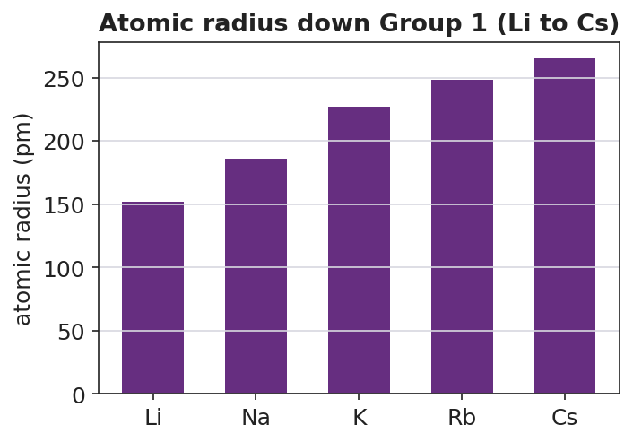
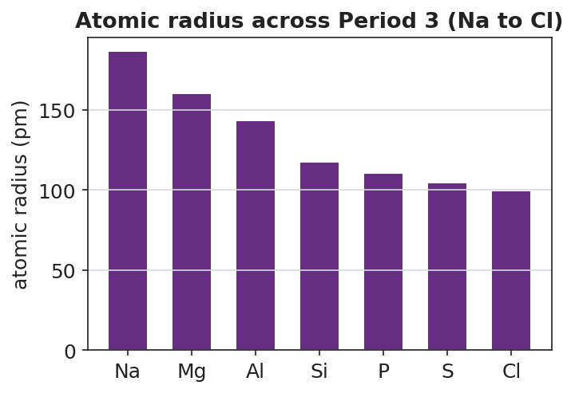

01 Phenomenon
Your teacher plays a video of alkali metals dropped in water, one at a time, going down Group 1. Lithium fizzes gently. Sodium skitters across the surface and may catch fire. Potassium ignites instantly with a lilac flame. Rubidium and cesium explode on contact. Every one of them does the exact same reaction — metal + water → metal hydroxide + hydrogen gas — yet the violence climbs steadily as you go down the column. One step past cesium sits francium, the last alkali metal.
02 Driving question
Why does francium react more violently with water than sodium does?
03 Notice & wonder
| I notice… | I wonder… |
|---|---|
Turn & Talk #1: Every alkali metal has exactly one valence electron and does the same reaction with water. In one sentence, what physical difference between a small atom (lithium) and a large atom (cesium) could make cesium give up its one electron so much more easily?
04 Initial model
Before your teacher names anything, write your best explanation for BOTH directions of the atomic-radius trend. Use what you know about electron shells and the nucleus.
- Why do atoms get larger as you go down a group (Li → Cs)?
- Why do atoms get smaller as you go across a period (Na → Cl)?
05 Investigate
Part 1 — ABCs: Read the radius direction before naming the trends
Look at the two charts your teacher is projecting. Do not explain why yet — just read the bars and write the direction.


| Direction of travel | What happens to atomic radius (larger / smaller)? | Smallest → Largest example |
|---|---|---|
| Down a group (Li → Cs) | ||
| Across a period (Na → Cl) |
Part 2 — Predict the reactivity ranking
Using only the Group 1 radius chart, rank the alkali metals from least violent to most violent reaction with water.
| Reaction violence | Element | Atomic radius (pm) |
|---|---|---|
| 1 = least violent | ||
| 2 | ||
| 3 | ||
| 4 | ||
| 5 = most violent |
In one sentence, explain the pattern: how does atomic radius connect to how easily the metal gives up its valence electron?
Part 3 — Build the four-trend summary table
Fill in each cell with increases or decreases. Use your radius reasoning to predict the others.
| Property | Across a period (left → right) | Down a group (top → bottom) |
|---|---|---|
| Atomic radius | ||
| Ionization energy | ||
| Electronegativity | ||
| Metallic character |
Where on the periodic table (which corner) is an atom most likely to lose its valence electron easily? _______________________
Switch the trend. Across a period, atomic radius decreases while ionization energy and electronegativity increase — the growing nuclear charge pulls the same outer shell in tighter. (Argon has no electronegativity value; noble gases don't bond.)
06 Make it make sense
For each pair, use the periodic table and the trends to answer. (These pairs are different from your Exit Ticket pairs.)
1. Sodium (Na) and potassium (K) are both in Group 1.
- Which has the larger atomic radius? _______________
- Why? (use “shells”) _______________________________________________
- Which gives up its valence electron more easily? _______________
2. Aluminum (Al) and chlorine (Cl) are both in Period 3.
- Which has the smaller atomic radius? _______________
- Why? (use “protons” and “nuclear pull”) _______________________________________________
- Which has the higher ionization energy? _______________
3. Of all four alkali metals on the chart, plus francium one step below cesium:
- Which would have the lowest ionization energy? _______________
- Which would be the most metallic? _______________
- In one sentence, connect those two answers to the violence of the water reaction.
07 Key vocabulary
- ionization energy
- the energy required to remove an electron from an atom; it *increases* across a period (atoms get smaller, valence electrons held more tightly) and *decreases* down a group (atoms get larger, valence electrons held more weakly)
- electronegativity
- a measure of how strongly an atom attracts shared electrons in a chemical bond; it *increases* across a period and *decreases* down a group, tracking the strength of the nucleus's pull on electrons (fluorine is the highest)
- metallic character
- the tendency of an element to lose electrons and behave like a metal; it *increases* down a group and *decreases* across a period, the mirror image of ionization energy (alkali metals, bottom-left, are the most metallic)
Use each term in a sentence about today’s investigation. Do not copy the definition — describe something you actually reasoned about or observed.
ionization energy: _______________________________________________ _______________________________________________
electronegativity: _______________________________________________ _______________________________________________
metallic character: _______________________________________________ _______________________________________________
08 Revise your model
Return to your Initial Model (the two-direction radius explanations). Add vocabulary labels:
Where you wrote “easier to pull off the electron,” write the trend term: _______________
Where you wrote “pulls electrons strongly,” write the trend term: _______________
Write a revised appositive sentence for one trend:
Electronegativity — _________________________ — increases across a period because _________________________.
Then finish this Because / But / So sentence:
Francium reacts more violently with water than sodium does because __________________________________________, but __________________________________________, so __________________________________________.
09 Exit ticket
(a) Magnesium (Mg) and sulfur (S) are both in Period 3. Which one has the LARGER atomic radius? Explain why using nuclear charge.
Larger radius: _______________ Explanation: _______________________________________________ _______________________________________________
(b) Lithium (Li) and cesium (Cs) are both in Group 1. Which one has the HIGHER ionization energy? Explain why using atomic size.
Higher ionization energy: _______________ Explanation: _______________________________________________ _______________________________________________
(c) In one sentence, explain why cesium gives up its valence electron more easily than lithium does.
10 Explore further
- Alkali metal in water demonstration video: Show a teacher-vetted clip of Li, Na, K (and, if available, Rb/Cs) reacting with water in sequence. Pause after each metal and ask students to rank the violence. No live alkali metals are used in the classroom — the demonstration is video only for safety. Connect each step to the metal's position in Group 1 and to `figures/atomic_radius_group1.png`.
- Trend-graphing lab using Reference Table data: Using the Periodic Table from the 2025 NYS Chemistry Reference Tables, students read atomic-radius (and, as an extension, electronegativity) values and plot the trend across Period 3 and down Group 1. Students compare their plots to the two figures in this lesson and write a sentence describing the direction of each trend. This is the core data-to-pattern skill for HS-PS1-1.
- Figure reading: Students interpret `figures/atomic_radius_period3.png` and `figures/atomic_radius_group1.png` to answer: in which direction does radius shrink, in which direction does it grow, and which alkali metal should react most violently with water?